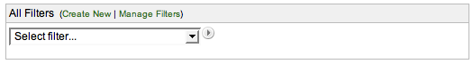
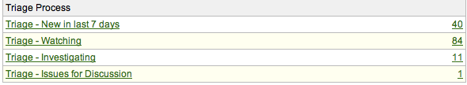
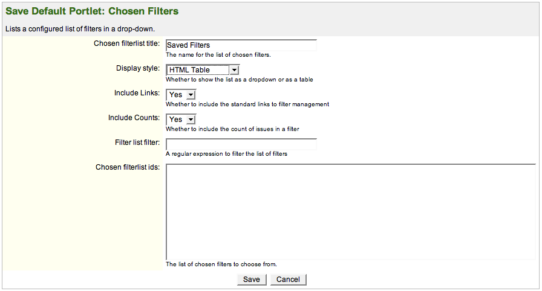

Created by Henri Yandell at SourceLabs, Inc.
Download: plugin jar, peruse source zip or check out svn.
Released under the Apache License 2.0 and Copyright 2007 Henri Yandell/SourceLabs, Inc.
This project uses the excellent famfamfam.com Silk icons.
This is a simple portlet for the JIRA dashboard that replaces the "Saved Filters" portlet.
Its expected use case is for saving screen real-estate, and for sharing a selected set of filters amongst all users.
It adds the following new functionality:
Version 1.0.3 was released on 12th of November 2007. It contained:
Version 1.0.2 was released on 28th of March 2007. It contained:
Version 1.0.1 was released on 21st of March 2007. It contained a bugfix for the create-new/manage links when the web context is not /jira.
Version 1.0 was released on 16th of March 2007.
Install the plugin by downloading the plugin jar, place it in your $JIRA/WEB-INF/lib/ and giving your JIRA a restart.
Once it's installed you can add it to your dashboard by selecting the Selected Filter List portlet. Please follow the instructions from Atlassian for configuring your personal dashboard or the default dashboard.
The source is available for perusing by downloading the source zip and unpacking.
Please mail these to me at bayard-at-generationjava.com, or add them as comments to the JIRA plugin page.
Here's a HTML <table> with just four filters selected:
Here's a screenshot of the HTML <select> at work:
And here's the configuration page, so you can be wowed by the feature list:
A regexp, or regular expression, is a syntax for doing pattern matching. It's hugely powerful (and surprisingly easier to hook up than wildcards or getting simple text searching to feel right). If you find yourselves getting into them, I highly recommend Jeffrey Friedl's definitive work on the topic. I do recognize however that the most common uses will be wildcard-like or simple-text like, so here are a few examples:
The easiest way is to click on the Manage Filters link and mouseover the links to the filters. The requestId parameter in the url is the id you want. I know it would be better to just have a list of filter names so people can choose from those, but that would mean a lot of work to then allow the ordering to be defined.